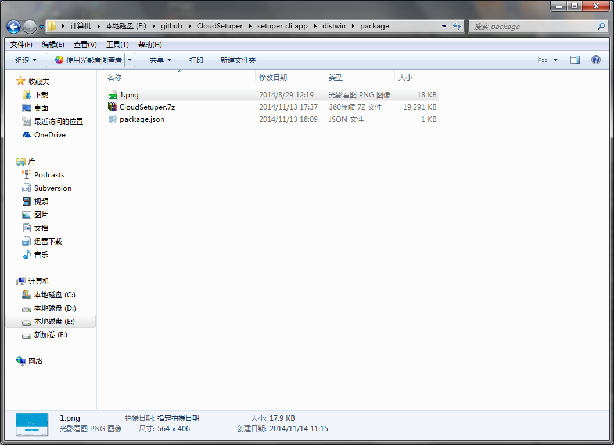

CloudSetuper CLI
什么是CloudSetuper CLI
CloudSetuper CLI是CloudSetuper系列的命令行打包工具
基本用法

installcopy.exe：打包的命令行工具InstallerUI.exe：默认安装包模板程序InstallerUI1.exe：安装包模板程序installcopy.exe自动寻找当前目录下的package目录，如果package目录里的数据格式正确，直接运行双击运行installcopy.exe即可在package目录下生成一个setup.exepackage目录

按照如下格式自定义你【package】目录下package.json
package.json格式
{
"files": [
{
"path": "CloudSetuper.7z",
"name": "CloudSetuper.7z"
},
{
"path": "1.png",
"name": "1.png"
}
],
"softwareemail": "dragondjf@gmail.com",
"desktoplink_on": "True",
"softwarecompany": "dragondjf.github.io",
"templateindex": 0,
"softwareauthor": "dragondjf",
"softwarename": "CloudSetuper",
"background-color": "0x353d48",
"desktoplinkname": "CloudSetuper",
"outputfoldername": "CloudSetuper",
"language": "en",
"exename": "CloudSetuper",
"softwareversion": "1.0.0"
}
参数含义：
softwarename：软件的名称
outputfoldername：程序安装到指定的目录名称
exename：程序可执行文件的名称
desktoplinkname：桌面快捷方式名称
softwareversion：软件版本号
softwareauthor：软件作者
softwareemail：邮箱地址
softwarecompany：公司名称
desktoplink_on：是否生成桌面快捷方式 可选参数["True", "False"]
background-color: 程序背景颜色
language: 语言选择（国际化）可选参数['en', 'zh_CN', 'zh_TW']
files：必需包含你的7z发布程序包 和 程序需要的图片资源文件；格式如上：
name: 文件名字
path: 文件路径
最好是7z,图片文件在同一个目录，这样path与name一样即可；如果不在同一个目录，则path必须指定为绝对路径
高级用法
输入installcopy.exe -h

-p 指定目录
-t 指定模板程序
-u 指定输出exe程序名字
-h 输出帮助信息
--version 显示程序版本号
如果使用-p,必须保证指定的目录结构里面的文件格式正确